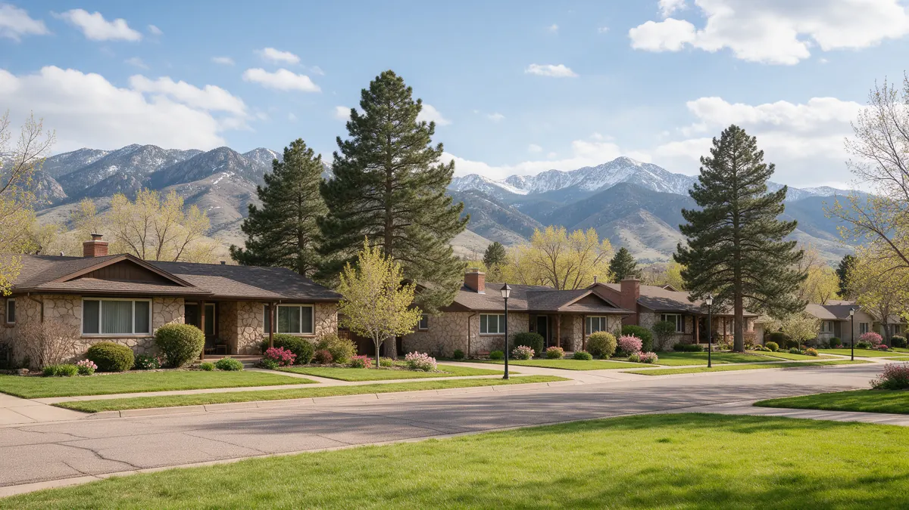

Plumber Littleton CO: A Handbook for Leaks and Backups

A plumber in Littleton CO may be called for a pipe leak, a slow drain or a sewage backup, and each calls for a slightly different first response. Littleton spans Arapahoe, Douglas and Jefferson counties, with older neighborhoods near Main Street and newer areas toward C-470. This handbook gives you steps, signs and questions. Plumbing Pros Colorado is a referral line connecting you with independent plumbers.
What to do first, by problem type
For a supply leak, close the main shutoff. For a sewer backup, stop running water, avoid flushing and keep people and pets out of the affected area. For a water heater leak, shut off its cold water inlet and power or gas supply.
Document everything with photos. If you are unsure which problem you have, treat it as a leak until the plumber says otherwise.
Keep towels and a bucket nearby, but resist the urge to plunge repeatedly during a backup. Extra pressure can push waste back into the home.
Take a moment to tell everyone in the household where the main shutoff is, since the person who finds the problem is often not the one who knows the house.
Warning signs in older homes
- slow drains in more than one fixture
- gurgling toilets
- sewer smell in the yard
- pinholes in copper
- discolored water
- damp lawn between house and street
Houses near Lee Gulch and Ketring Park have mature trees, and roots are drawn to moisture in older clay or cast iron sewer lines. Repeating slow drains are a hint that a camera look is overdue.
A gurgle from a toilet when the washing machine drains is a classic sign that air has no easy path, which often means a partial blockage downstream.
How the plumber usually proceeds
After a visual check, the plumber might run a drain machine or a camera to see what is happening in the line. If the problem is on the supply side, pressure testing and acoustic detection can locate a leak.
Hydro jetting is one option for clearing buildup, while a damaged pipe may need spot repair, lining or replacement. Ask the plumber to explain the choice and what each would involve.
Ask what the camera showed, and request a copy of the video if available. It is useful evidence and helps with later decisions.
Questions worth asking
Ask what caused the problem, whether it is likely to return and what you can do to lower the odds. Ask where the cleanout is and whether it is accessible.
If your home is near Hudson Gardens or along Platte Canyon Road, mention any nearby landscaping or fencing that could affect digging.
Mentioning the age of the house, the type of pipe and any past repairs gives the plumber a head start.
Keeping Littleton plumbing in shape
Do not flush wipes, even those sold as flushable, and keep grease out of kitchen drains. Have the sewer line scoped if you buy a home with mature trees.
Insulate pipes in exterior walls and crawlspaces, and drain hoses before winter. A small habit, like checking under sinks, can catch a leak early.
Plant new trees away from the sewer path, and ask the plumber where the line runs before digging a garden bed.
The south metro mix
Littleton connects to its neighbors through Broadway, Santa Fe Drive and C-470, and its homes reflect decades of building. A bungalow near downtown Littleton and a townhome near the Littleton Museum may share a zip code but not a pipe material.
Many properties here have mature landscaping, and roots, sprinklers and drainage all affect plumbing. Walk your yard in spring, look for soggy or sunken patches, and mention them to the plumber.
Older sewer lines deserve special attention before a big event such as hosting family or finishing a basement. A camera look beforehand tells you whether the line can handle the added use. Ask the plumber to mark the line path so future projects avoid it.
If you are planning ahead, make a one-page note with the shutoff location, cleanout location and the age of the house. Share it with anyone who stays at the home, so a leak is handled the same way no matter who finds it.
Frequently asked questions
Are flushable wipes really safe?
They often do not break down like toilet paper and can catch in lines. Most plumbers advise throwing them away. Water heater issues can look like a general leak, so identify the tank, the pipes above it and any pan below before you call.
What is a sewer scope?
A camera inspection of the sewer line. It is commonly used when buying a home, but works equally well after backups. Hydro jetting uses high pressure water to scour pipe walls, while a cable simply bores through. Each suits different situations.
Why does my copper pipe leak with tiny holes?
Pinhole leaks can come from corrosion inside the pipe, aggressive water chemistry or age. A plumber can assess whether more of the line is affected. Different parts of the city are served by different districts, so check your bill for the provider.
Can I do anything about roots?
Root cutting can clear a line, but roots may regrow. Ask the plumber about options and a sensible interval for rechecking. Scopes take little time and can reveal conditions you would never find otherwise.
Do you connect callers in Englewood or Centennial?
The referral line works with independent plumbers around the south metro. Give your location when you call. Service areas shift, so give your neighborhood and cross streets.
Plumbing services in Littleton
- Water Leak Repair
- Emergency Plumbing
- Drain Cleaning
- Water Heater Services
- Sewer Line Repair
- Gas Line Services
- Slab Leak Repair
- Pipe Repair & Replacement
- Toilet Repair
- Bathroom Plumbing
Nearby Colorado cities
- Water leak repair in Morrison
- Water leak repair in Denver
- Water leak repair in Evergreen
- Water leak repair in Boulder
Ready to talk to someone? Call (720) 794-0974 or visit get connected with a south metro plumber.